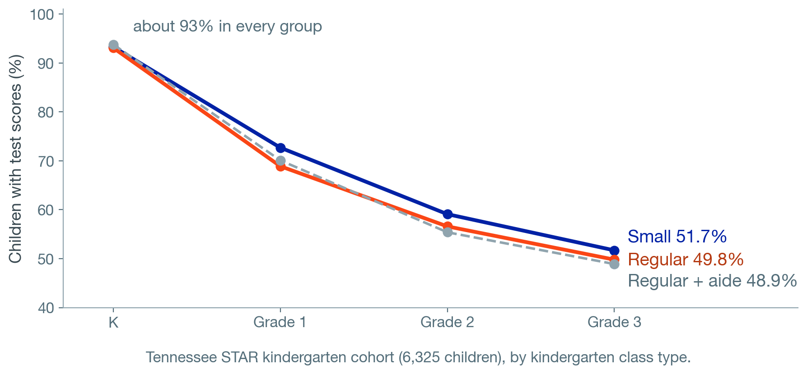
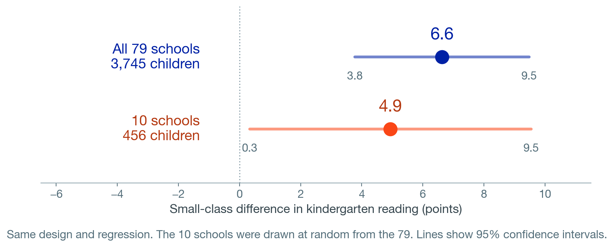

Randomized: admission to oversubscribed Boston charter high schools, by lottery.
Found: higher pass rates on the state graduation exam, more AP test-taking, a shift from two-year to four-year colleges; a modest effect on overall enrollment.
Randomized: college-intending high school graduates, to receive personalized text reminders over the summer.
Found: higher college enrollment, mainly among students with less access to college counseling.
Castleman & Page (2015)
High-dosage math tutoring
Randomized: Chicago 9th and 10th graders, to daily small-group tutoring by paraprofessionals (two trials).
Found: participating raised math scores by 0.18 to 0.40 SD.
Guryan, Ludwig et al. (2023)
PlayPosit Question 1
A district funds a new daily advisory period in 20 of its 40 middle schools, chosen by lottery. Attendance ends up 1.5 percentage points higher in the advisory schools. Which statement is best supported?
Advisory raised attendance only if the advisory schools had higher attendance before the program
The 1.5-point difference can be read as the effect of the advisory period, because the lottery made the two groups of schools alike on average
The difference must be adjusted for school poverty before it can be interpreted
No conclusion is possible without a regression model
Hypothetical example.
Offers and Participation
Assigned to small classes in kindergarten
92.3% were still in a small class in grade 1
Assigned to regular classes in kindergarten
8.3% had moved into a small class in grade 1
Intent to treat: compare groups by what they were assigned, whatever happened afterward.
It measures the effect of offering a program, which is what a district can control.
PlayPosit Question 2
A lottery offers after-school tutoring to 500 of 1,000 applicants. Sixty percent of those offered attend regularly. The study compares reading scores for all 500 offered with all 500 not offered. What does this estimate describe?
The effect of tutoring on students who attended regularly
The effect of tutoring on students who never attended
A comparison with selection bias, because not everyone attended
The effect of offering tutoring: the intent-to-treat estimate
Hypothetical example.
Did Randomization Work? Balance
Children were randomized at school entry, so there is no earlier test score. Compare their characteristics.
Small
Regular
Regular + aide
Test across groups
Girls
49%
49%
48%
p = .89
White
68%
67%
66%
p = .27
Free lunch
47%
48%
50%
p = .09
Controls can make a trial’s estimate more precise. They cannot repair a randomization that failed.
Who Is Still in the Study? Attrition

Overall attrition: how many left in total. Large here: about half by grade 3.
Differential attrition: whether one group lost more. The bigger threat. Small here: about 2 points.
How Precise Is the Estimate? Power

A small trial gives a wide interval. When a small study reports “no significant effect,” check whether the interval also includes effects that would matter.
PlayPosit Question 3
A summer reading program is tested by lottery. In the fall, reading scores are available for 88% of students offered the program and 65% of students not offered. Which concern matters most?
The program may have been too short
The sample may be too large
Differential attrition: the students who remain in the two groups may no longer be comparable
The study did not control for prior reading scores
Hypothetical example.
Who Do the Results Apply To?
Which schools were in STAR
About 180 volunteered. About 100 had the 57 kindergartners needed. 79 were selected, in 42 districts.
Slightly larger than average, with slightly lower prior scores. One state, 1985–89.
Scaling up
In 1996, California cut K–3 classes by about 10 students, at over $1 billion a year, encouraged by the STAR results.
Many new teachers were not fully certified, which partly or fully offset the gains in some schools.
Jepsen & Rivkin (2009)
PlayPosit Question 4
A trial in 12 volunteer schools in one district found strong effects of an instructional coaching program. A different district wants to adopt it in all 60 of its schools. Which question addresses external validity?
Are the 12 volunteer schools, and their coaches, similar to the schools and coaches the new district would have?
Were the treatment and control schools balanced at the start?
Did the study use a lottery to assign schools?
Was the confidence interval narrow?
Hypothetical example.
The “Gold Standard” and Where to Find Evidence
Why RCTs are called the gold standard
Random assignment makes the comparison fair by design.
It does not guarantee a good study: attrition, precision, and setting still matter. Many questions cannot be randomized (Module 8).
What Works Clearinghouse
Reviews studies of education programs (Institute of Education Sciences).
Without Reservations: randomized trials with low attrition. With Reservations: other studies whose groups were similar at the start.
ESSA tiers of evidence
1 Strong: experimental study 2 Moderate: quasi-experimental study 3 Promising: correlational study with controls 4 Demonstrates a rationale
Title I school improvement funds require tiers 1–3.
The Debate Over Randomized Trials
Influence
2019 Nobel Prize in economics: Banerjee, Duflo & Kremer, “for their experimental approach to alleviating global poverty.”
One of their studies led to remedial tutoring programs reaching more than five million children in India.
Critique
Deaton & Cartwright (2018):
Groups are alike on average, not identical in any one trial
Randomization does not guarantee precision
Results apply to the trial sample; using them elsewhere needs an argument
Aim to learn why programs work
Practical limits: cost, time, a partner willing to randomize, and the ethics of withholding a program.
Six Questions for Reading a Randomized Study
1
What was randomized, and at what level? Students, classrooms, or schools. If schools, students are nested within them (Modules 5–6).
2
What did each group receive? Treatment vs. control; the offer or participation.
3
Were the groups balanced at the start?
4
Who left the study? Overall and in each group.
5
How large is the effect, and how precise? Effect size and confidence interval.
6
Who do the results apply to? Where, when, with whom, and at what scale.
Research Critique 3
The article
Roschelle, Feng, Murphy & Mason (2016), AERA Open
An online math homework platform with immediate feedback for students and reports for teachers, plus teacher training and coaching.
43 Maine middle schools randomly assigned to use it or continue their usual homework; math scores for about 2,850 seventh graders.